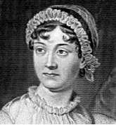

Gurur ve Önyargı (1813), İngiliz roman yazarı Jane Austen’in (1775-1817) tartışmasız en tanınmış eseridir. Diğer romanları ile birlikte bu romanı da orta sınıf yaşamına odaklanmasıyla çığır açan bir eserdi. Aristokratik âlem, büyük ölçüde erken dönem İngiliz edebiyatının odağındaydı. Kitap, şaşırtıcı şekilde komedi ve ironi ile dolu modern olay örgüsü ile, nesiller boyunca beğenilen bir kitap olmayı sürdürdü.

Austen, sekiz kardeşten yedincisiydi. Orta sınıfa mensup ailesi, okumaya verdikleri değer ve bursları ile üzerinde etki bıraktı. Kısa bir dönem, kendi düzeyindeki çoğu İngiliz kadınının o zamanlar aldığından daha fazla eğitim aldığı bir kız yatılı okuluna kaydoldu. Ailesi tarafından cesaretlendirilerek yazmaya başladı. Gurur ve Önyargı’nın ilk taslağını 1796’da neredeyse bitirmişti. El yazması bir yayınevi tarafından reddedildikten sonra, Austen, onu bir kenara koydu ve ona dönene kadar diğer projeler üzerinde on seneden daha fazla çalıştı.
Gurur ve Önyargı, Elizabeth Bennet isimli genç bir kadınla dört kız kardeşinin romantik endişelerini anlatır. Austen gibi Elizabeth de orta sınıf yetiştirme tarzında büyümüştür. Bay ve Bayan Bennet’in ilk başta mülklerini kızlarına miras bırakmak istemelerine rağmen, beş kızlarının olması ve oğullarının olmaması gerçeği, mülklerini bir akrabaları olan sevimsiz dalkavuk Bay Collins’e vakfetmeleri veya ceza olarak vermeleri anlamına geliyordu. Bu şanssız durum, Bayan Bennet’i kızlarının evlilik durumları hakkında sürekli olarak endişelendiriyordu.
Bir akşam bir baloda Elizabeth, Bay Darcy adında varlıklı genç bir adamla tanışır. Birbirlerinin ilgisini çekmelerine rağmen, Elizabeth Darcy’nin ukalalığından ve Darcy de Elizabeth’in orta sınıf ailesinin fazla gösterişli olmayan antikalarından dolayı kendisini geri çeker. Uzun süren kabalıklar, karşılıklı yanlış anlamalar ve birbirini suçlamalardan sonra, Elizabeth ve Darcy birbirlerine duydukları sevgiyi fark eder ve nihayetinde nişanlanırlar.
Gurur ve Önyargı zekice, içgörülü ve zengin karakterleri ile sevilmiştir. Atılgan, bağımsız Elizabeth, edebiyatın büyük kadın kahramanlarından biri olmuştur. Gıdaklayıp duran bir tavuk gibi olan anne Bayan Bennet, sadık Bay Bennet’i istifaya sürükleyen dramalar yaratmaya hazırdır. Belki de en akılda kalanı, yeğeninin “ailesi, bağlantıları veya serveti olmayan genç bir kadınla sonradan görme bir gösterişliliğe” düşmesi ihtimali karşısında donakalan Darcy’nin kin dolu züppe teyzesi Lady Catherine’dir. Bunların kara mizah ve tatmin edici bir sonla, sevgi dolu verilen portrelerinin bir birleşimi, Gurur ve Önyargı’yı İngiliz edebiyatının en eğlendirici klasiklerinden biri yapar.
EK BİLGİ:
1. Austen’in 1817’deki zamansız ölümü, üretken kariyerini yarıda kesmiştir. Northanger Manastırı ve İkna romanları 1818’de ölümünden sonra yayınlanmıştır.